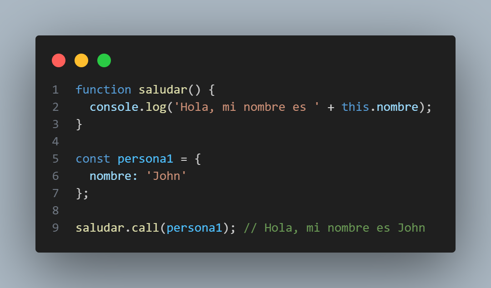
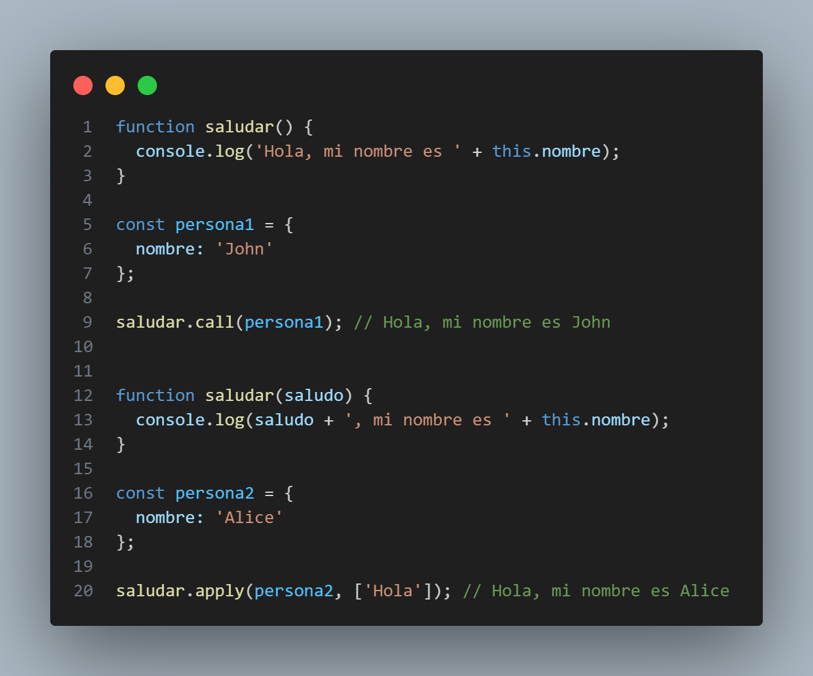
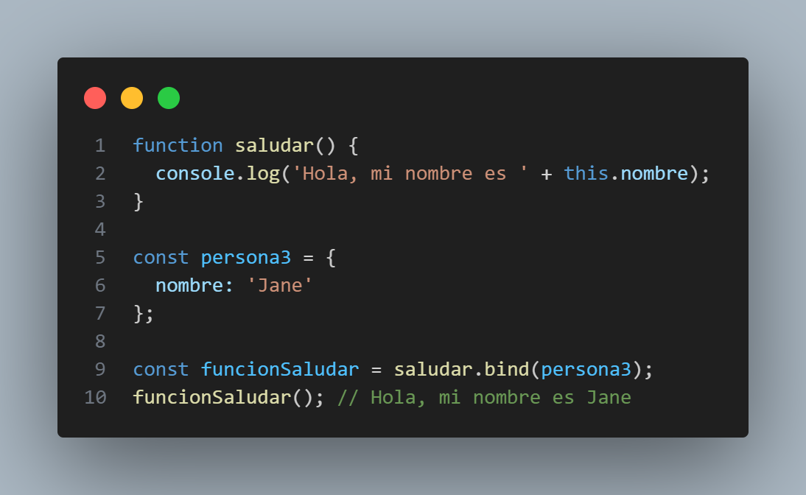

This en JavaScript
En JavaScript, la palabra clave this se refiere al objeto en el cual se está ejecutando el código en un momento dado. El valor de this es determinado por cómo se invoca una función, y puede variar dependiendo del contexto de ejecución. Entender el valor de this es esencial para escribir código JavaScript efectivo.
Funciones Call, Apply & Bind
JavaScript proporciona tres métodos para controlar explícitamente el valor de this al llamar a una función: call, apply y bind.
1. Función Call:
El método call permite llamar a una función con un valor específico para this. En el ejemplo anterior, al llamar
saludar.call(persona1), el valor de this dentro de la función saludar se establece en el objeto persona1.
2. Función Apply:
El método apply es similar a call, pero recibe los argumentos de la función como un array. En el ejemplo, pasamos el argumento 'Hola' como primer elemento del array, y this se establece en el objeto persona2.
3. Función Bind:
El método bind crea una nueva función que tiene this preestablecido al valor pasado como argumento. En el ejemplo, creamos una nueva función funcionSaludar que tiene su this vinculado al objeto persona3.
El uso adecuado de this y las funciones call, apply y bind permite controlar y manipular correctamente el contexto de ejecución de las funciones en JavaScript, lo que facilita el desarrollo de aplicaciones más sólidas y mantenibles.